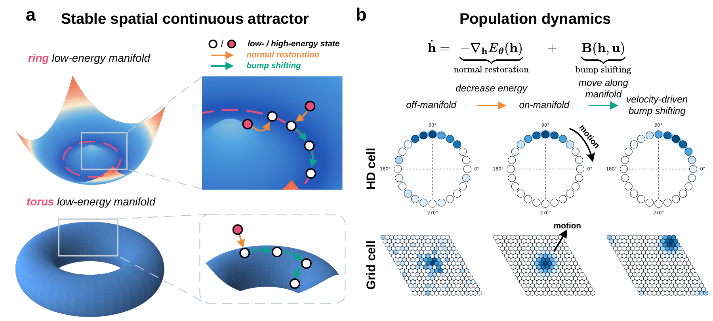
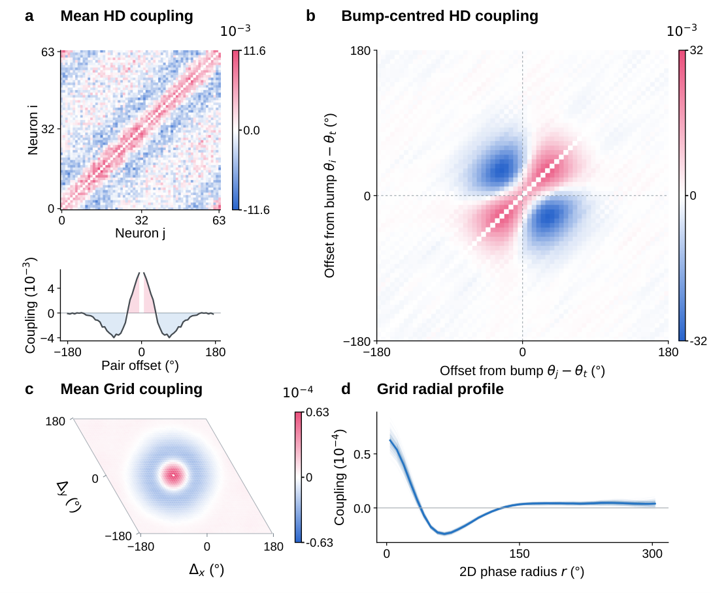

01
Return to the manifold
CAML shapes a scalar energy whose low-energy set represents a supplied spatial manifold. Its gradient restores perturbed activity toward the manifold.
normal restorationEnergy-based restoration. Velocity-driven bump shifting.
Spatial cognition requires neural representations that remain stable under perturbations while tracking changes in orientation and location.
CAML shapes a scalar energy whose low-energy set represents a supplied spatial manifold. Its gradient restores perturbed activity toward the manifold.
normal restorationA separately learned bump-shifting field drives motion along the manifold in response to angular or linear velocity inputs.
bump shifting
First, follow population states as they recover toward the ring and torus. Then inspect a single activity bump during recovery or movement.
Each point is one population state. Both views use fixed linear readouts of the raw activity.
Playback is accelerated. Each clock shows the simulated time for its population.
Recovery follows the Figure 3 protocol: Gaussian noise with SD 0.3 (HD) or 0.5 (Grid), followed by 25 s or 200 s of restoration. The displayed coordinates are fixed linear readouts of population activity.
Dynamics use RK4 with dt = 0.05 s. Movement examples use learned bump shifting. HD angular velocity changes direction; Grid linear velocity is mapped to phase velocity with a scale of 2 rad/m. The examples illustrate model dynamics; the results below summarize the separate 100-trajectory benchmark.
Experiments on head-direction rings, grid-cell tori, and a bounded non-periodic place manifold demonstrate perturbation recovery and velocity-driven tracking.
Learned bump shifting reduces Grid phase error relative to fixed shifting across both tested velocity limits.
100 paired trajectories per condition · Table 2
Both groups share the same horizontal scale. Axis errors are averaged within each trajectory.
| Population | Velocity setting | Learned shifting | Fixed shifting |
|---|---|---|---|
| HD | 0.5 rad/s limit | 0.752 ± 0.375° | 0.654 ± 0.342° |
| HD | 1.0 rad/s limit | 1.425 ± 0.653° | 1.557 ± 0.825° |
| Grid | 0.5 rad/s per-axis limit | 0.093 ± 0.037° | 0.715 ± 0.287° |
| Grid | 1.0 rad/s per-axis limit | 0.157 ± 0.050° | 1.968 ± 0.731° |
| Place | Random walk | 0.0039 ± 0.0023 m | 0.0671 ± 0.0700 m |
The Place main model combines quadratic and Fourier energies. Learned shifting does not win every condition: fixed shifting has lower mean HD error at the 0.5 rad/s limit.
Local excitation and surround inhibition emerge from the learned restoring dynamics. The Grid interaction profile has a local excitatory peak and broader inhibitory surround.
View the full figure ↗
CAML separates two complementary roles: restoring perturbed activity toward the manifold and moving activity along it in response to self-motion.
CAML assumes supplied population encodings and restoration targets. Its recovery advantage depends on noise structure and amplitude; direct decoding performs better under weak Grid Gaussian noise. The energy-descent result applies to autonomous restoration, not arbitrary velocity-driven dynamics.